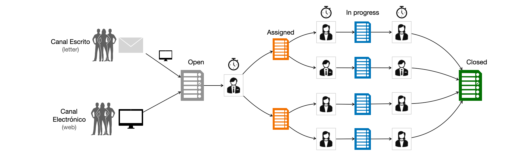
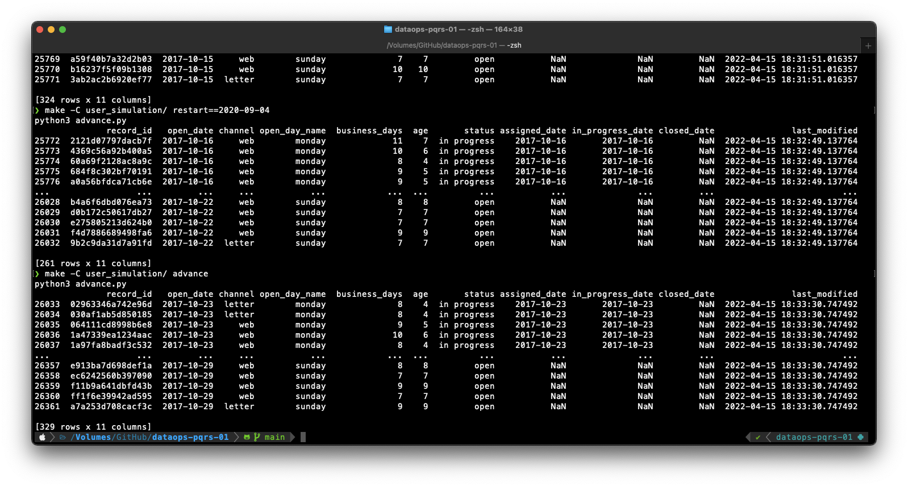

Etapa 1 — Simulación de la base de datos transaccional y operación
Ultima modificación: Mayo 14, 2022 | YouTube
Definición del problema

La empresa a venido atendiendo las PQRS que presentan los clientes mediante documentos escritos. La empresa a decidido poner en funcioamiento un aplicativo que permita gestionar electrónicamente los documentos presentados por los usuarios. Luis, ingeniero de operaciones será el responsable por el adecuado funcionamiento de la base de datos transaccional, mientras que Laura, directora de servicio al cliente, será responsable por la respuesta de las peticiones de usuarios registradas en la base de datos.
La empresa tendrá dos canales habilitados para la recepción de las PQRS:
Un canal físico donde las personas entregan su petición por escrito.
Un canal web donde se hacen las peticiones electrónicas.
Esta es la situación base y es similar a lo que vivieron las organizaciones durante la masificación del uso de las bases de datos.
Después de varios meses de desarrolllo y puesta a punto el sistema por fin entra en operación.
Flujo de trabajo

Los clientes presentan documentos durante el día usando uno de los canales.
Los documentos son ingresados el mismo día al sistema y quedan en estado
'open'.Una persona es encargada de asignar los documentos a los equipos especializados y los documentos quedan en estado
'assigned'. La persona tiene una capacidad limitada de asignación, por lo que los documentos puede asignarse uno o más dias después de recibidos ('open').Cuando un documento
'in progress'es completamente gestionado, la persona encargada lo cierra (estado'closed'), y toma el siguiente documento en estado'assigned'de la pila de documentos asignados (el documenot pasa a estado'in progress'). Una persona puede tener varios documentos'in progress'simultaneamente, y el tiempo de gestión es variable y depende de cada caso puntual.
Tabla del sistema transaccional
La tabla del sistema transaccional para registrar los documentos contiene los siguientes campos:
record_id: campo único que identifica cada documento.open_date: fecha de presentación del documento por parte del usuario.channel: canal (letteroweb) por donde se presenta el documento.open_day_name: nombre del día de la semana en que se presenta el documento.business_days: número de días hábiles que el documento pasa en esado'in_progress'.age: contador regresivo para determinar los días faltantes para cerrar el documento.status:{'open', 'assigned', 'in progress', 'closed'}.assigned_date: fecha en que el documento pasó de'open'a'assigned'.in_progress_date: fecha en que el documento pasó de'assigned'a'in progress'.closed_date: fecha en que el documento pasó de'in progress'a'closed'.last modified: campo de control que indica la fecha y hora en que el registro se inscribio a la base de datos transaccional.
Simulador
El sistema de simulación contiene dos carpetas:
operational_rdbms: contiene la tabla del transaccional.
user_simulation: contiene el código que simula la operación del sistema.
Repositorio en GitHub
El código completo de este documento se encuentra disponible en:
https://github.com/jdvelasq/dataops-pqrs-example
Makefile
https://github.com/jdvelasq/dataops-pqrs-example/blob/main/user_simulation/Makefile
restart.py
https://github.com/jdvelasq/dataops-pqrs-example/blob/main/user_simulation/restart.py
advance.py
https://github.com/jdvelasq/dataops-pqrs-example/blob/main/user_simulation/advance.py
simulator.py
https://github.com/jdvelasq/dataops-pqrs-example/blob/main/user_simulation/simulator.py
Ejemplos
Se ejecutan en el directorio raíz del repo:
$ make -C user_simulation/ restart

$ make -C user_simulation/ advance n_weeks=4
$ make -C user_simulation/ restart==2020-09-04
$ make -C user_simulation/ advance